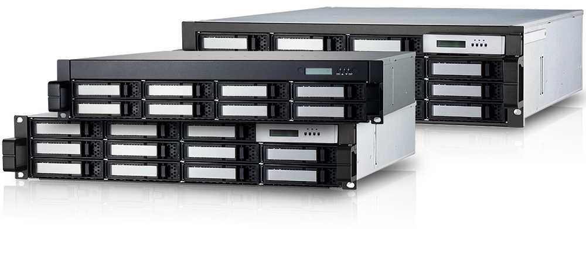

ARC-71xx series
(GbE(x4) / 6Gbps eSATA / USB 3.0 to SATA RAID Storage Subsystem)

System Architecture
✵ Quad Core ARM V7 1.2 GHz processor
✵ 2GB on-board DDR3-1200 SDRAM with ECC protection
✵ Support up to 24 internal 6.0Gbps SATA ports
✵ LAN with MPIO, MC/S, Trunking and LACP support
✵ Battery backup module ready (optional)
Faster Than Ever
Availability & Security
Unparalleled Performance
Host Interface
1 x 6.0Gbps eSATA
1 x 5.0Gbps USB 3.0
4 x 1.0Gbps GbE iSCSI

High Performance ROC
Quad Core ARM V7 1.2 GHz Processor
2GB DDR3-1200 ECC Protection
Drive Interface
Up to 8/12/16/24 x 3.5”/2.5”
6Gb/s and 3Gb/s
SATA HDDs/SSDs
GbE(x4) / 6Gbps eSATA / USB 3.0 to SATA RAID Storage Subsystem
The ARC-71xx RAID subsystem is a family of 8/12/16/24 6.0Gbps SATA hard drive ports depending upon the amount of storage required. The ARC-71xx supports multiple host interfaces; eSATA lll, iSCSI or USB 3.0 that can work with different application requirement.
When properly configured, the RAID subsystem can provide non-stop service with a high degree of fault tolerance through the use of RAID technology and advanced array management features. The 4 port iSCSI connections deliver high performance, advanced function, high availability, and scalable storage capacity with both direct iSCSI host and IP network connectivity.
| Cost-Effective ARC-71xx Series SATA Rackmount RAID Storage | ||||
| ARC-7108MS-HR2 | ARC-7112MS-HR2 | ARC-7116MS-HR3 | ARC-7124MS-HR4 | |
| Internal Ports | 8 x 3.5”/2.5” SATA | 12 x 3.5”/2.5” SATA | 16 x 3.5”/2.5” SATA | 24 x 3.5”/2.5” SATA |
| Data Transfer Rate | Up to 6Gb/s per port | |||
| Cache Protection | 2GB DDR3-1200 ECC Protection | |||
| Host Interface | 1 x 6.0Gbps eSATA, 1 x 5.0Gbps USB 3.0 and 4 x 1.0Gbps GbE iSCSI | |||
| Processor | Quad Core ARM V7 1.2 GHz processor | |||
| RAID Features |
• RAID level 0, 1, 10(1E), 3, 5, 6, 30, 50, 60, Single Disk or JBOD • Multiple RAID 0 and RAID 10(1E) support (RAID 00 and RAID 100) • Configurable stripe size up to 1024KB • Automatic drive failover and detection and rebuild using multiple Global, Dedicated or Enclosure hot- spare drives • Multiple pairs SSD/HDD disk clone function • SSD automatic monitor clone (AMC) support • SED (Self-encrypting drives) function support • Support for native 4K and 512 byte sector devices • Support HDD firmware update • Hot-swap and redundant components for increasing availability • eSATA host: 8 volumes(with port multiplier), iSCSI host:128 volumes and USB 3.0 host: 8 volumes |
|||
| RAID Management Software |
• Flashable firmware via RS-232 and LAN port • Push Buttons and LCD for setup and status • Firmware-embedded manager via RS-232 port • Browser-based RAID manager, SMTP manager, SNMP agent and Telnet function • API with sample and functional code • ArcCLI (command-line interface) • ArcSAP monitor utility easily manage multiple RAID units |
|||
| Operating Systems | OS Independent | |||
| Physical Dimensions (H x W x D) |
88.2 x 482 x 484 mm (3.5” x 18.9” x 19”) |
88.2 x 482 x 484 mm (3.5” x 18.9” x 19”) |
132.6 x 482 x 484 mm (5.2” x 18.9” x 19”) |
176.4 x 482 x 484 mm (6.9” x 18.9” x 19”) |
| Weight | 36.4 lbs / 16.5 kg | 37.5 lbs / 17 Kg | 38.6 lbs / 17.5 Kg | Single: 44 lbs / 20 Kg Dual: 46.3 lbs / 21 Kg |
| Power Supply | Dual 400W hot swap and redundant | Triple 400W hot swap and redundant | ||
| Operating Temperature | 0 °C to 40 °C | |||
| Regulatory Certification | CE, FCC | |||
| Environmental Compliance | RoHS | |||
| Warranty | 3 years | |||
| BBM Support | ARC-6120BAT121-7 | |||
Downloads
| File | Version | Date |
|---|---|---|
| ARC-71xx firmware | 1.56 |
2019/07/30 |
|
1. Add progress % for some http operation 2. Improve FAIL_DRIVE_IF_MANY_ERROR |
||